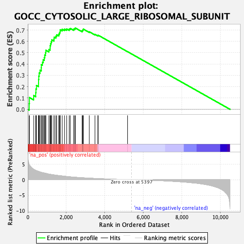
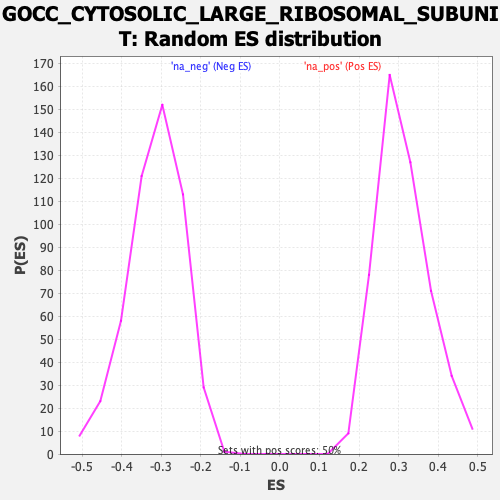

| Dataset | qlf.KOd4vsWTd4_gsea_score |
| Phenotype | NoPhenotypeAvailable |
| Upregulated in class | na_pos |
| GeneSet | GOCC_CYTOSOLIC_LARGE_RIBOSOMAL_SUBUNIT |
| Enrichment Score (ES) | 0.7178355 |
| Normalized Enrichment Score (NES) | 2.3039865 |
| Nominal p-value | 0.0 |
| FDR q-value | 0.0 |
| FWER p-Value | 0.0 |

| SYMBOL | RANK IN GENE LIST | RANK METRIC SCORE | RUNNING ES | CORE ENRICHMENT | |
|---|---|---|---|---|---|
| 1 | RPL7A | 71 | 4.969 | 0.0499 | Yes |
| 2 | RPL5 | 82 | 4.819 | 0.1040 | Yes |
| 3 | RPL7L1 | 305 | 3.392 | 0.1215 | Yes |
| 4 | RPL6 | 410 | 3.044 | 0.1463 | Yes |
| 5 | RPL14 | 422 | 3.014 | 0.1797 | Yes |
| 6 | RPL29 | 450 | 2.937 | 0.2107 | Yes |
| 7 | RPL15 | 557 | 2.721 | 0.2316 | Yes |
| 8 | MRPL1 | 559 | 2.713 | 0.2625 | Yes |
| 9 | RPL10 | 569 | 2.692 | 0.2924 | Yes |
| 10 | RPL3 | 590 | 2.636 | 0.3205 | Yes |
| 11 | RPLP0 | 635 | 2.532 | 0.3452 | Yes |
| 12 | RPL8 | 701 | 2.422 | 0.3667 | Yes |
| 13 | RPL7 | 704 | 2.420 | 0.3941 | Yes |
| 14 | RPL36AL | 761 | 2.307 | 0.4151 | Yes |
| 15 | RPL35A | 800 | 2.259 | 0.4373 | Yes |
| 16 | RPL23 | 858 | 2.189 | 0.4568 | Yes |
| 17 | RPL27 | 882 | 2.152 | 0.4792 | Yes |
| 18 | RPL27A | 918 | 2.109 | 0.4999 | Yes |
| 19 | RPL11 | 939 | 2.074 | 0.5217 | Yes |
| 20 | RPL12 | 1095 | 1.838 | 0.5279 | Yes |
| 21 | RPL10A | 1160 | 1.770 | 0.5420 | Yes |
| 22 | RPL13 | 1162 | 1.769 | 0.5621 | Yes |
| 23 | RPL21 | 1186 | 1.745 | 0.5798 | Yes |
| 24 | RPL4 | 1216 | 1.713 | 0.5966 | Yes |
| 25 | RPL18 | 1245 | 1.682 | 0.6131 | Yes |
| 26 | RPL17 | 1358 | 1.576 | 0.6204 | Yes |
| 27 | RPL36A | 1368 | 1.566 | 0.6374 | Yes |
| 28 | RPL9 | 1458 | 1.491 | 0.6459 | Yes |
| 29 | RPL28 | 1501 | 1.454 | 0.6585 | Yes |
| 30 | RPLP1 | 1611 | 1.367 | 0.6637 | Yes |
| 31 | RPL19 | 1645 | 1.339 | 0.6758 | Yes |
| 32 | RPL35 | 1677 | 1.315 | 0.6879 | Yes |
| 33 | RPL38 | 1684 | 1.311 | 0.7023 | Yes |
| 34 | RPL31 | 1785 | 1.241 | 0.7069 | Yes |
| 35 | RPL23A | 1911 | 1.142 | 0.7080 | Yes |
| 36 | RPL24 | 2021 | 1.060 | 0.7097 | Yes |
| 37 | RPL37 | 2153 | 0.983 | 0.7084 | Yes |
| 38 | RPL22 | 2207 | 0.951 | 0.7142 | Yes |
| 39 | RPLP2 | 2380 | 0.860 | 0.7075 | Yes |
| 40 | RPL39 | 2435 | 0.837 | 0.7119 | Yes |
| 41 | RPL13A | 2472 | 0.817 | 0.7178 | Yes |
| 42 | RPL32 | 2821 | 0.661 | 0.6921 | No |
| 43 | UBA52 | 2849 | 0.650 | 0.6969 | No |
| 44 | RPL36 | 2865 | 0.643 | 0.7029 | No |
| 45 | RPL41 | 2888 | 0.631 | 0.7079 | No |
| 46 | RPL18A | 3196 | 0.527 | 0.6846 | No |
| 47 | RPL34 | 3491 | 0.432 | 0.6614 | No |
| 48 | FXR2 | 3640 | 0.386 | 0.6517 | No |
| 49 | ZCCHC17 | 3655 | 0.381 | 0.6547 | No |
| 50 | RPL37A | 5186 | 0.038 | 0.5088 | No |
